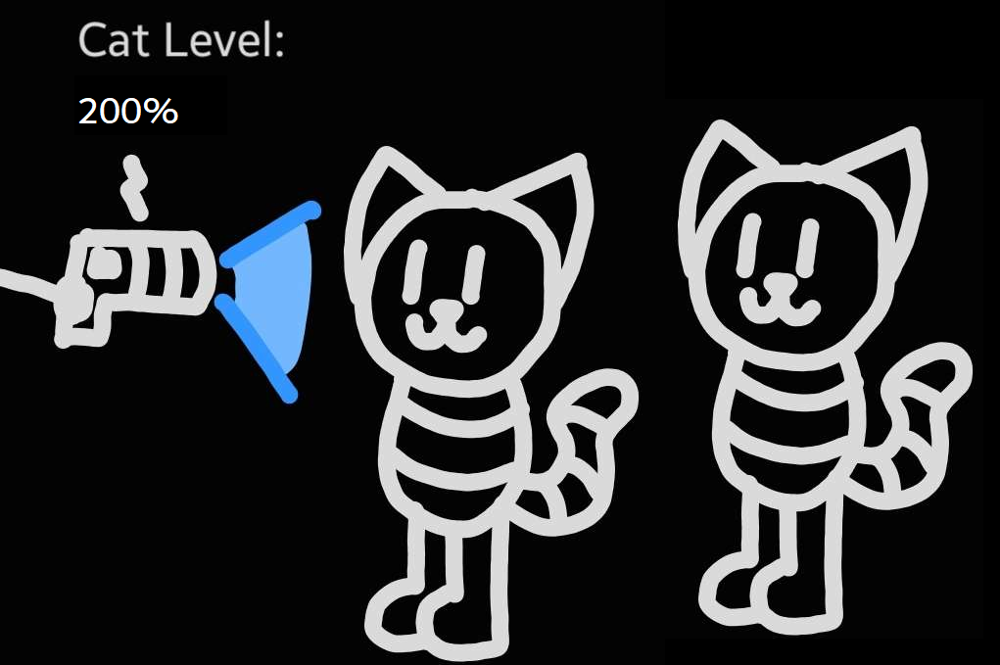
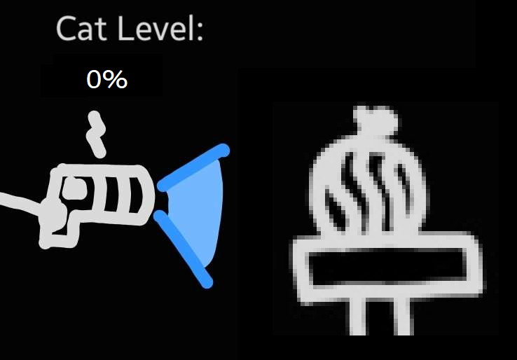
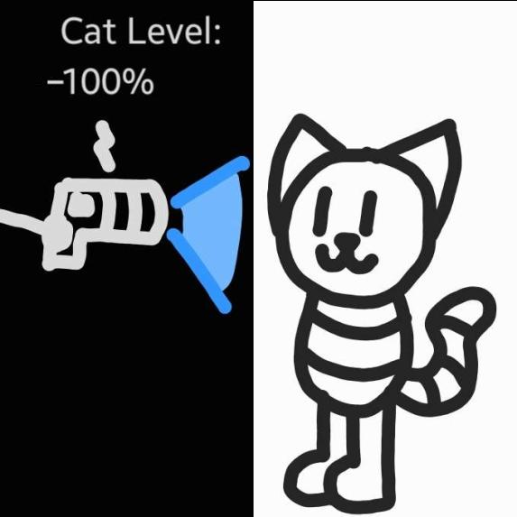

This is a page comprised of some notable art pieces I've drawn of Coolkat over the years!
If you want to look at some awesome fan art of Coolkat that other people have made, click the button below!

Otherwise, continue scrolling to see the art I've made.
Art #1

This is quite literally the first image of Coolkat that I've ever made.
This is a screenshot of an image I made for a Coolkat Acapella series for my youtube channel (do NOT look it up it is very cringe and bad) and I think CK's design still holds up very well. Its simple, and that's what I love about it.
Good first image. 7/10
Art #2

The Iconic Coolkat Sit™
If you ever see Coolkat in a sitting position, this is why. I drew this image of CK sitting down, and I personally think It's pretty good. My only gripes are the line count and the 'unfinished' looking strokes.
Pretty good. 6/10
Art #3

Cool
Not much to say here, its also pretty good. This is the first time I drew Coolkat with sunglasses and I think I did a pretty good job.
5/10
Art #4

👍
I don't really like this one. I think the hand and arm look out of place, and Coolkat doesn't look too great either.
Thumbs down. 3/10
Art #5

Super Cool
I really like how I did the facial features like the shades and mouth. Unfortunately, the ears as well as the 4 tail lines (its only supposed to be 3 smh) prevent me from giving this a high score.
A bit warm. 4.5/10
Art #6

My first ever Coolkat comic!
There are a lot of inconsistencies with this one like the line count on the body and the brush size, but hey, it was my first comic and I think the punchline is pretty good.
It's okay. 6/10
Art #7

Ughhh I don't like this one at all.
The line count on CK's body is not consistent at all for these first few images. 2 is the standard, 3 is okay I guess, but 4 is just too much. Not only that, but one of the hands has a thumb for some reason, even though it would've been just fine as a circle.
Take notes on what NOT to do. 2/10
Art #8

Its just Coolkat enjoying a cookie :3
Love this one. Super cute. Definitely one of the best drawings in this era.
Cookie/10
Art #9

honk mimimimimimimi
Its just a drawing of Coolkat going to sleep. I like how I drew the head resting on the pillow.
8/10
Art #10

He is NOT Listening!!!!
His EARS are on the TOP of his head!!! Not the side!!!!!! Smh my head!!! I can't believe that I would draw something like this!!!1!!111!!1
Jokes aside, it's pretty good. 7/10
Art #11

Gone fishing
This is probably my first time I've actually drawn something with perspective, and I think it came out pretty well! The legs and ears on Coolkat are a bit small, but its great overall.
Fishin. 9/10
Art #12

The first Coolkat reference sheet!
At this point I actually have a base for how I wanted CK to look like. Most of the stuff listed here (except for the arms) actually still applies to him today. I'm not 100% sure on what 'non-solid' is supposed to mean.
Pretty good ref sheet. 8.5/10
Art #13

Coolkat has no arms. He will never be balli- PFFFFFFFFFF
He is ballin
ball/10
Art #14

Finally, the dot has been acquired.
I think all the broken stuff scattered all around makes this image really funny. I like this one a lot, and I think it fits perfectly as the last image of Coolkat canonically having arms.
Very good. 9/10
Art #15

The first Coolkat gif <3
I think that this one is really well made and it loops pretty well. I used flipaclip to make this one, and its really good for my first project.
Very cool. 8.5/10
Art #16

He sees the melon
This one started a sort of inside joke about CK observing a melon and eventually led to a melon oc. Not much to say about the art itself lol.
melon/10
Art #17

This is the first second image of Coolkat that is fully colored to my knowledge.
At this point, I have been drawing Coolkat for about a year now and it really shows. CK has a standardized design now and is overall much more consistent than when I first started. The face looks good, the ears look good, there are 2 lines on the body and 3 on the tail, everything here looks great. I would have to say that this image was the start of a new era for Coolkat.
Very good drawing. 9.5/10
Art #18

Dicey Dungeons!
At this point, I was working on a dicey dungeons mod that implemented Coolkat into the game. I decided to draw an image of it and I think it turned out very well! The ears are very well done in my opinion and it very much resembles CK while still looking like a real Dicey Dungeons character. I should probably finish up the mod though...
Uhhh let's see here... *rolls d20* ...16/20
Art #19
Pixel art!
I made these for an rpg project I planned to participate in. Each person was supposed to make 9 separate emotions of their character, with each image being 72 by 72 pixels. Unfortunately, the rpg project never was finished, but I may still use these in a future project.
Pretty solid pixel art. 6.5/10
Art #20

Heres some vent art I made when I was going through a really tough time in my life.
Ignoring the fact that I was sad, I think the perspective was drawn pretty well. It took a while to draw the sitting down, hunched over position for Coolkat, since I dont typically draw complex positions like that, but it's executed very well in my opinion.
Very nice. 8/10
Art #21

AAAAAAAAA I LOVE HIM
I WANNA HUG HIM SO BAD HE LOOKS SO FLUFFY AND SOFT AND SQUEEZABLE I NEED TO DRAW HIM MORE I LOVE HIM SO MUCH AAAAAAA
EASY 10/10 I LOVE HIM SO MUCHHHHHHH
Art #22

Wow. Uhh yeah. This one is just really good.
This image showcases the 9 main coolkat variants (go to the lore page here if you're confused), and I think it does a really good job at showcasing their personalities too. I think ghostkat is drawn a bit weirdly, but this is probably one of my best art pieces nonetheless.
Very cool. 9.5/10
Art #23

As a certified cat, I can confirm that is indeed a cat.
No real reason I decided to showcase this one. It just looks really silly and I love it. Also a few edits from other people spawned from it which were really funny.
  cat/10
Art #24

Ok, I have a lot to say about this one
First, I think the drawing itself is great. I love it. Coolkat's just there, laying down, and smiling. It's awesome and its a good drawing of Coolkat.
Second, the card itself is a great tableturf card in my opinion. It's not too overpowered, since it has a 5 special attack cost and it consists of 14 total squares. I also think that the special block is placed really well here. It combos pretty well with real tableturf cards such as Sprinkler, Luna Blaster Neo, and possibly .52 Gal. The card in itself can be used to push into your opponent's territory or block off areas that your opponent could push into, similar to Classic Squiffer or Jet Squelcher. The tail on the card also allows for a bit of extra reach incase you're a few blocks off from where you want to go. Overall, I think it fits super well as an tableturf card and it's designed very well.
Very awesome tableturf card. 10/10
Art #25

This one was really fun to make lol.
If you don't know already, I draw using the world's greatest drawing tool known as Samsung Notes. To make this image, I had to 1: draw the MS Paint Coolkat. 2: port the image to my phone. 3: import the MS Paint Coolkat into Samsung Notes. 4: draw the normal Coolkat over that. 5: screenshot and save the image. It was a lot, but the result was totally worth it.
Awesome combination of drawing* tools. 9.5/10
Art #26

This one just looks cool and I wanted to include it.
8/10
Art #27

<3
I made this for valentine's day and I think it has a really sweet message. This applies for every day by the way, not just valentine's day.
Awesome image. 9/10
Art #28

Another vent art that I made that happens to look really cool.
I don't typically do glitch effects like this, but maybe I should do it more, because this one looks fantastic. The green lines blend in very well without looking like they're out of place or disconnected. The dots also capture the dissolving effect that I was going for perfectly.
Really cool simulation effect thing. 9/10
Art #29

No way its Kat from the hit game Katformer created by Coolius C. Katter published on March 26th 2023 available at https://coolkatt.itch.io/katformer-demo and coming to Steam in 2045.
I decided to make some Official Katformer Art, and I think it looks awesome. Perspective is a bit weird, and I'm not too sure what's happening with the background, but it still looks cool.
Katformin'. 8/10
Art #30

One of my friends made a fake alt account of me and I decided to make a sort of meme about the interaction lol.
I'm especially proud of the emotions on this one. Coolkat expresses exactly the emotion I want them to express. Tired and sort of fed up with the (pfft) copycats (where is my funny award). The mask is on point too, with the face being a blank smile and the small line on the side of the face like a rubber band holding up the facade. I think it's a really good piece, and I'm exceptionally proud of it.
Awesome art. 10/10
Art #31

Confronting yourself.
I think I drew Coolkat and Kat pretty well here. Nothing else to really say about it. I think its funny to see CK look at a smaller version of himself.
kat/10
Art #32

And finally, one of the most recent pieces of art I've drawn at this time.
These are the 9 main CK variants except I drew them smol. I think they look pretty cute and I was able to keep most of their main features even though they're heavily downscaled.
Solid art piece. 9/10
And that's all of the main art pieces that I'm covering in this page. I've definitely come a long way from the first initial drawing of Coolkat. If you don't want to scroll all the way back up, you can click this to go back to the top.
I could've definitely covered the hundreds of other images that I've drawn, but then this page would be miles long. Anyway, thanks for checking out this webs site and going through this entire page, it means a lot :3